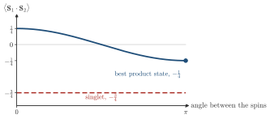
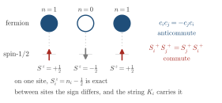

Advanced Quantum Materials 2027 · All lectures · Lecture notes
Session 7. Quantum Many-Body Entanglement and Tensor Networks
7.1 Two regimes of many-body physics
Let us go back to the general interacting Hamiltonian that we have used in the whole course,
\[H = \sum_{ij} t_{ij}\, c_i^\dagger c_j \;+\; \sum_{ijkl} V_{ijkl}\, c_i^\dagger c_j c_k^\dagger c_l. \tag{7.1}\]
The kinetic term is free and can be solved exactly, and the interaction term in general cannot. In all sessions so far we treated (7.1) in the same way. We decoupled the quartic term with mean field, we replaced it with an effective bilinear Hamiltonian, and we looked at which symmetry is broken by the resulting order parameter. This strategy defines what we can call weakly correlated matter. In this sense, magnets, superconductors and charge density waves are all single-particle physics, once we find the right symmetry-broken background.
In this session we are in the opposite regime, which is strongly correlated matter. Here the interactions are so strong that no effective single-particle Hamiltonian gives the ground state, for any choice of the decoupling. Quantum spin liquids and fractional Chern insulators are our two main examples, and more generally, the same problem appears when we want an accurate phase diagram of a truly interacting model. In both cases we cannot solve the problem with an ansatz for the broken symmetry. Instead, we need something close to an exact numerical solution, or at least a controlled approximation that does not assume symmetry breaking from the start. This is what tensor networks give us.
A quantum spin liquid has no order parameter. What does a self-consistent mean-field calculation give for it?
Show the answers
- A. ✗ False
This is false. A finite magnetization is a magnetic order, and a spin liquid has none. For the singlet of two spins we find \(\langle S^z_i\rangle=0\) exactly, at every size.
- B. ✓ True
This is true. The self-consistent loop looks for a symmetry-broken solution. If the true state has none, the loop converges to zero, which is a valid but empty answer.
- C. ✗ False
This is false. Mean field is a product-like trial state, so its energy is only an upper bound. For the singlet of two spins the best mean-field energy is \(-1/4\) while the exact one is \(-3/4\).

Two spins in a product state against the singlet. The best product state has the energy \(-\frac14\) and the singlet has \(-\frac34\).
7.2a Fermions and spins, two languages for the same physics
Before we build the tool, let us point out something that was present in the last sessions without being said explicitly. We have used two families of many-body Hamiltonians that look different. The first family is the fermionic Hamiltonians of the form (7.1), with a general two-body interaction \(V_{ijkl}\), where density-density interactions are only a special case, which we used in sessions 1 to 5. The second family is the spin Hamiltonians, mainly the Heisenberg model \(H = \sum_{ij} J_{ij}\, \mathbf{S}_i \cdot \mathbf{S}_j\), which we used for the magnons of session 6 and which we use again in this session for quantum spin liquids. These are not two different topics. They are the same physics written in two different languages, and in this section we make this translation precise.

We replace \(c_1^\dagger\) and \(c_2^\dagger\) of two different sites by \(S_1^+\) and \(S_2^+\) with no extra factor. What goes wrong?
Show the answers
- A. ✗ False
This is false. On one site \(S^z=n-\tfrac12\) is exact, since an occupied site is \(S^z=+1/2\) and an empty site is \(-1/2\). The problem only appears between two sites.
- B. ✓ True
This is true. On a single site the replacement is exact, as the figure shows. Between two sites the commutator and the anticommutator differ, and this is the sign that the Jordan-Wigner string will carry.
- C. ✗ False
This is false. The hopping term \(c_1^\dagger c_2+c_2^\dagger c_1\) is replaced by \(S_1^+S_2^-+S_2^+S_1^-\), which is its own Hermitian conjugate. The Hamiltonian stays Hermitian and it is just the wrong one.